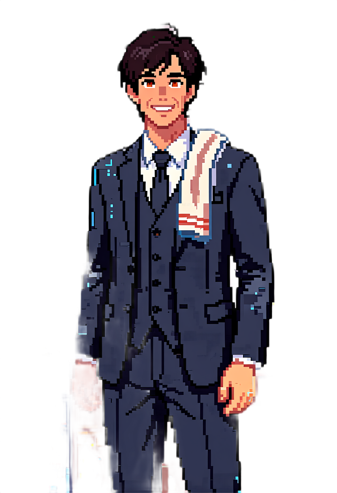
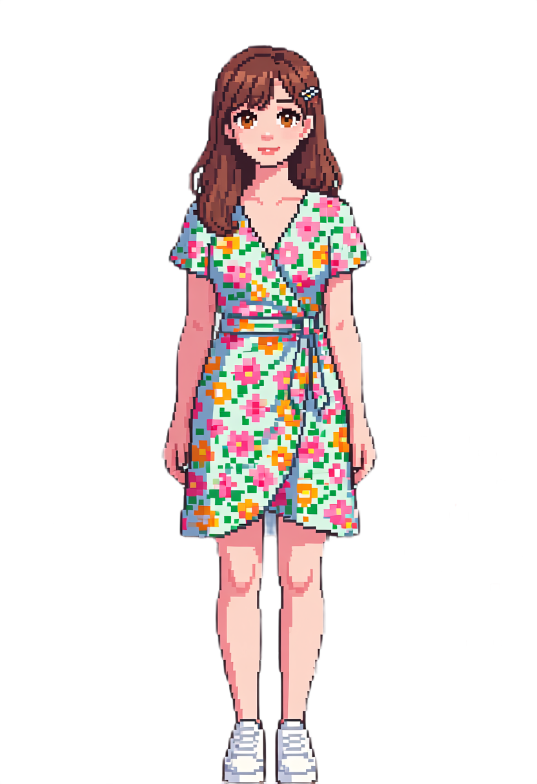
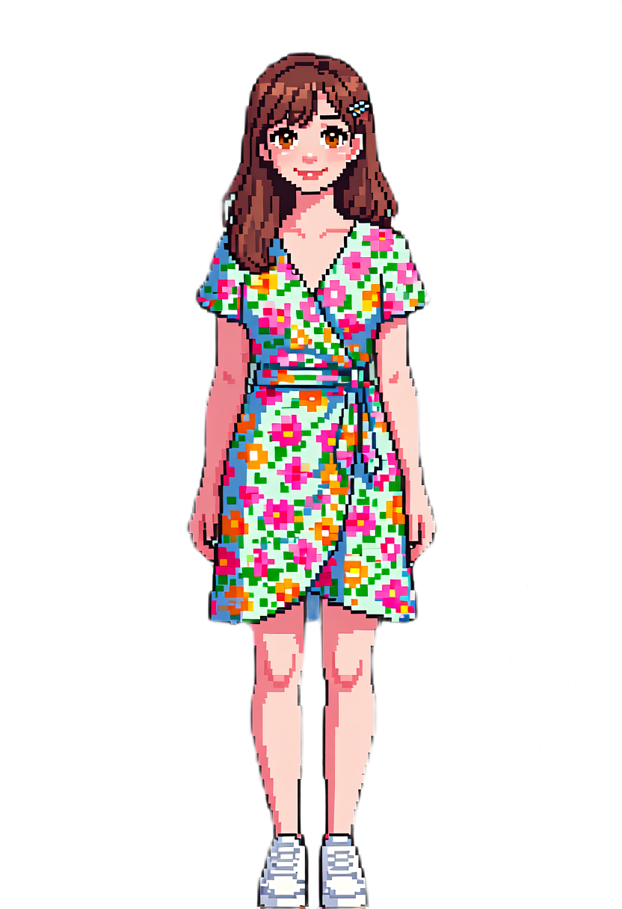
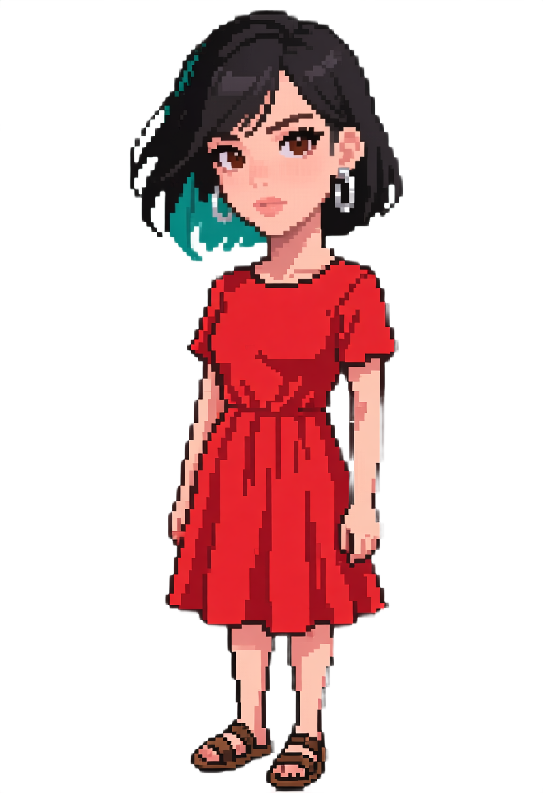
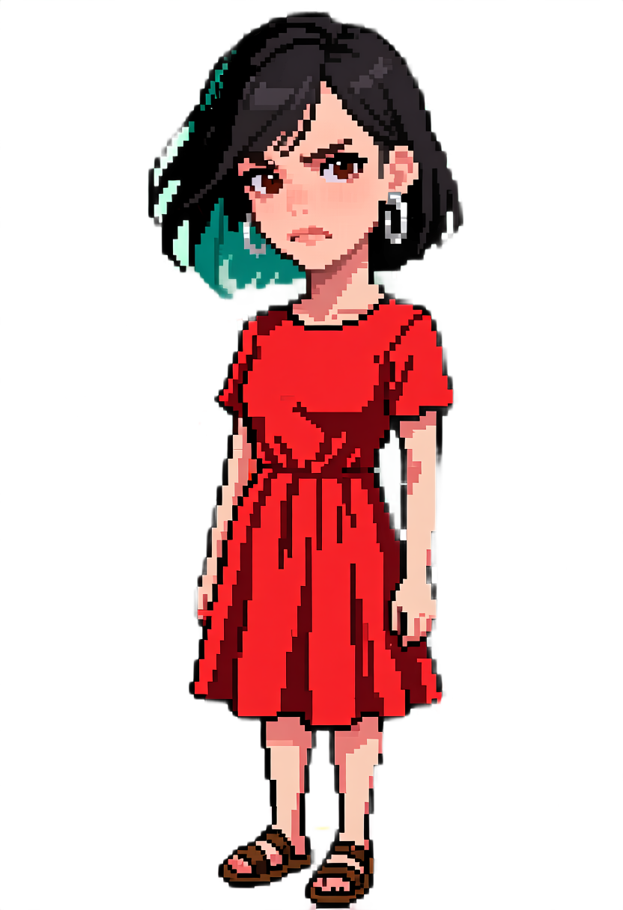

Ron Azulay
tailored navy two-piece suit with matching suit jacket and trousers, white dress shirt and dark tie · pipeline probe (no suit menu option)

Four adult characters · neutral versus generated expression · no placeholder artwork
tailored navy two-piece suit with matching suit jacket and trousers, white dress shirt and dark tie · pipeline probe (no suit menu option)

light blazer over a black tee and dark jeans
floral wrap dress and white sneakers


red knee-length summer dress and sandals

